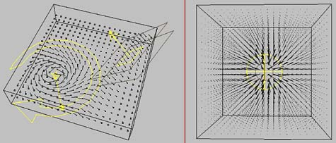
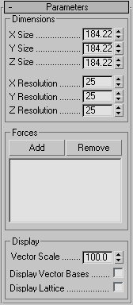

ForceViewer
A helper object that lets you directly visualize the effects of spacewarps in a scene.

The image on the left shows a vortex and a decayed directional wind with a slight turbulence.
The image on the right shows a simple decayed spherical wind.
Options:

- Dimensions Group:
- X / Y / Z Size:
- Sets the size of the ForceViewer cube. This acts as a "window" into space, showing what effect spacewarps are having inside the cube.
- X / Y / Z Resolution:
- Sets the resolution of the ForceViewer cube, or how how many vectors are along each axis of the cube.
Note, it is often handy to set one of these (usually Z) to 1 to reduce visual clutter (giving you a 2D plane of vectors). Then you can simply scrub the plane around in space to get a better sense of what spacewarps are doing.
- Forces Group:
- Add / Remove:
- Allows you to set which spacewarps you want to view.
- Display Group:
- Vector Scale:
- Adjusts how large the force vectors are drawn. 1.0 is their "real" size.
- Display Vector Bases:
- If on, each vector gets a dot at its base, to better indicate its direction.
If the vector is pointing out of the view (towards you), the base is solid. If it's pointing into the view (away from you), it's hollow.
Note that turning this on can slow down the display quite a bit.
- Display Lattice:
- Draws a 3D lattice surrounding the vectors.
Back To Top...
Known Bugs/Limitations:
- Blur's Wind and RandomWalk will (unfortunately) not work with ForceViewer due to apparent bugs with those spacewarps.
Back To Top...
History:
2001.10.17 - Created.
2001.11.14 - Added backfacing vector bases a la NullHelper.
2003.07.21 - Changed defaults to a flat, dense plane of vectors (usually more helpful).
2003.10.15 - Bugfixes in display.
2007.02.20 - Updating for public 3dsmax9 release.
2008.04.05 - Updated to 64 bit and 3dsmax 2008. Thanks to David Baker for the help.
Back To Top...
Contact / Disclaimer / License:
Bug reports/comments/suggestions: http://www.footools.com/. If you use this software on a project, sending an e-mail/postcard indicating such would be appreciated.
This software is provided 'as-is', without any express or implied warranty. In no
event will the author be held liable for any damages arising from the use of this
software.
Permission is granted to anyone to use this software, subject to the following
restrictions:
1. The origin of this software must NOT be misrepresented; you must not claim that
you wrote the original software.
2. This software may NOT be bundled with any other product or included in any
compilation without the express permission of the author.
3. This notice must NOT be removed or altered from any distribution of this
software.
Back To Top...